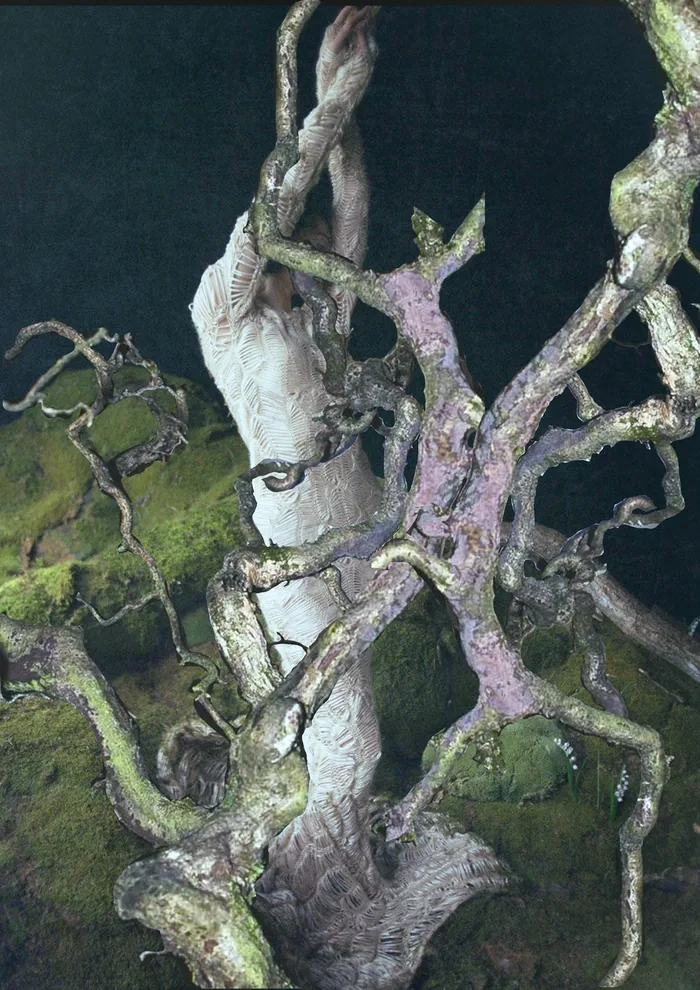

Московская неделя моды
29 сентября, 20:30Манеж, Москва

Коллекция собрана целиком из переработанных материалов. Мы возвели изношенность тканей в абсолют, усилив её деконструкцией формы и обработки.
ЗарегистрироватьсяМосковская неделя моды
29 сентября, 20:30Манеж, Москва

Коллекция собрана целиком из переработанных материалов. Мы возвели изношенность тканей в абсолют, усилив её деконструкцией формы и обработки.
Зарегистрироваться